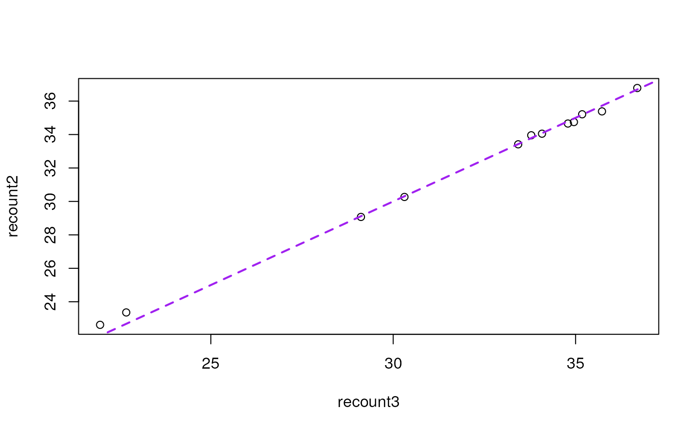

R/transform_counts.R
transform_counts.RdIn preparation for a differential expression analysis, you will have to
choose how to scale the raw counts provided by the recount3 project. These
raw counts are similar to those provided by the recount2 project, except
that they were generated with a different aligner and a modified counting
approach. The raw coverage counts for recount2 are described with
illustrative figures at https://doi.org/10.12688/f1000research.12223.1.
Note that the raw counts are the sum of the base level coverage so you have
to take into account the total base-pair coverage for the given sample
(default option) by using the area under the coverage (AUC), or alternatively
use the mapped read lengths. You might want to do some further scaling to
take into account the gene or exon lengths. If you prefer to calculate read
counts without scaling check the function compute_read_counts().
transform_counts(
rse,
by = c("auc", "mapped_reads"),
targetSize = 4e+07,
L = 100,
round = TRUE,
...
)A
RangedSummarizedExperiment-class
created by create_rse().
Either auc or mapped_reads. If set to auc it
will compute the scaling factor by the total coverage of the sample. That is,
the area under the curve (AUC) of the coverage. If set to mapped_reads it
will scale the counts by the number of mapped reads (in the QC annotation),
whether the library was paired-end or not, and the desired read length (L).
A numeric(1) specifying the target library size in number
of single end reads.
A integer(1) specifying the target read length. It is only used
when by = 'mapped_reads' since it cancels out in the calculation when
using by = 'auc'.
A logical(1) specifying whether to round the transformed
counts or not.
Further arguments passed to compute_scale_factors().
A matrix() with the transformed (scaled) counts.
This function is similar to
recount::scale_counts() but more general and with a different name to
avoid NAMESPACE conflicts.
Other count transformation functions:
compute_read_counts(),
compute_scale_factors(),
is_paired_end()
## Create a RSE object at the gene level
rse_gene_SRP009615 <- create_rse_manual("SRP009615")
#> 2023-05-06 23:44:34.551628 downloading and reading the metadata.
#> 2023-05-06 23:44:34.687165 caching file sra.sra.SRP009615.MD.gz.
#> 2023-05-06 23:44:35.066714 caching file sra.recount_project.SRP009615.MD.gz.
#> 2023-05-06 23:44:35.266991 caching file sra.recount_qc.SRP009615.MD.gz.
#> 2023-05-06 23:44:35.481853 caching file sra.recount_seq_qc.SRP009615.MD.gz.
#> 2023-05-06 23:44:35.690667 caching file sra.recount_pred.SRP009615.MD.gz.
#> 2023-05-06 23:44:35.788755 downloading and reading the feature information.
#> 2023-05-06 23:44:35.914631 caching file human.gene_sums.G026.gtf.gz.
#> 2023-05-06 23:44:36.441705 downloading and reading the counts: 12 samples across 63856 features.
#> 2023-05-06 23:44:36.569496 caching file sra.gene_sums.SRP009615.G026.gz.
#> 2023-05-06 23:44:36.771128 constructing the RangedSummarizedExperiment (rse) object.
## Scale the counts using the AUC
assays(rse_gene_SRP009615)$counts <- transform_counts(rse_gene_SRP009615)
## See that now we have two assayNames()
rse_gene_SRP009615
#> class: RangedSummarizedExperiment
#> dim: 63856 12
#> metadata(8): time_created recount3_version ... annotation recount3_url
#> assays(2): raw_counts counts
#> rownames(63856): ENSG00000278704.1 ENSG00000277400.1 ...
#> ENSG00000182484.15_PAR_Y ENSG00000227159.8_PAR_Y
#> rowData names(10): source type ... havana_gene tag
#> colnames(12): SRR387777 SRR387778 ... SRR389077 SRR389078
#> colData names(175): rail_id external_id ...
#> recount_pred.curated.cell_line BigWigURL
assayNames(rse_gene_SRP009615)
#> [1] "raw_counts" "counts"
## You can compare the scaled counts against those from
## recount::scale_counts() from the recount2 project
## which used a different RNA-seq aligner
## If needed, install recount, the R/Bioconductor package for recount2:
# BiocManager::install("recount")
recount2_sizes <- colSums(assay(recount::scale_counts(
recount::rse_gene_SRP009615,
by = "auc"
), "counts")) / 1e6
recount3_sizes <- colSums(assay(rse_gene_SRP009615, "counts")) / 1e6
recount_sizes <- data.frame(
recount2 = recount2_sizes[order(names(recount2_sizes))],
recount3 = recount3_sizes[order(names(recount3_sizes))]
)
plot(recount2 ~ recount3, data = recount_sizes)
abline(a = 0, b = 1, col = "purple", lwd = 2, lty = 2)

## Compute RPKMs
assays(rse_gene_SRP009615)$RPKM <- recount::getRPKM(rse_gene_SRP009615)
colSums(assay(rse_gene_SRP009615, "RPKM"))
#> SRR387777 SRR387778 SRR387779 SRR387780 SRR389079 SRR389080 SRR389081 SRR389082
#> 534875.3 556523.8 577278.0 537320.5 571998.7 556085.7 520211.3 504730.5
#> SRR389083 SRR389084 SRR389077 SRR389078
#> 581826.4 592046.0 628754.7 696160.1
## Compute TPMs
assays(rse_gene_SRP009615)$TPM <- recount::getTPM(rse_gene_SRP009615)
colSums(assay(rse_gene_SRP009615, "TPM")) / 1e6 ## Should all be equal to 1
#> SRR387777 SRR387778 SRR387779 SRR387780 SRR389079 SRR389080 SRR389081 SRR389082
#> 1 1 1 1 1 1 1 1
#> SRR389083 SRR389084 SRR389077 SRR389078
#> 1 1 1 1